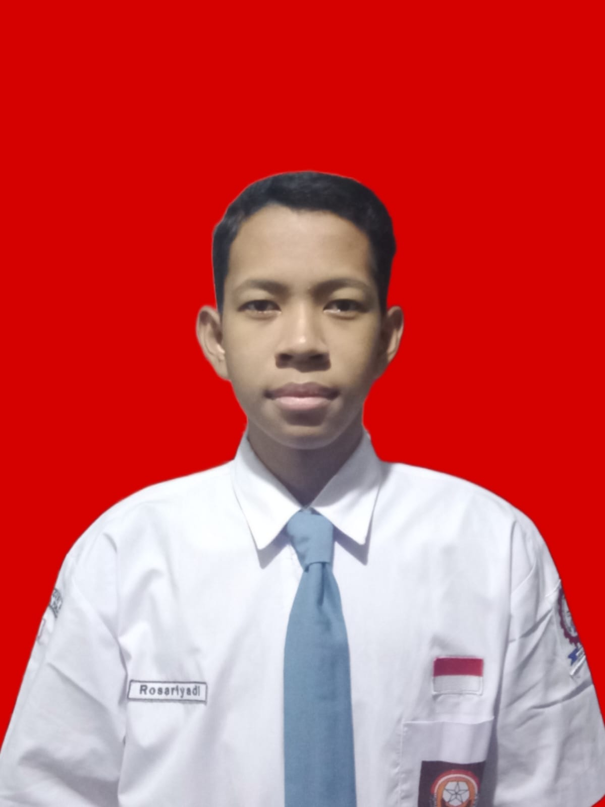

Rosariyadi
Alamat: Jakarta Utara, Pademangan Barat
No HP: 0812-1868-7466 | Email: rosariyadi@gmail.com
Tentang Saya
Saya seorang siswa SMK jurusan Teknik Komputer dan Jaringan yang aktif dalam organisasi seperti Pramuka dan berbagai kegiatan praktik di bidang komputer dan jaringan. Saya tertarik di dunia IT support dan jaringan, dan ingin terus mengembangkan keterampilan.
Pendidikan
SDN Pademangan Barat 03 Pagi – (2014 – 2020)
SMPN 42 Jakarta – (2020 – 2023)
SMKN 54 Jakarta – Teknik Komputer dan Jaringan (2023 – sekarang)
Keahlian Teknis
- Simulasi dan konfigurasi jaringan (Cisco Packet Tracer, GNS3, Mikrotik)
- Instalasi sistem operasi melalui VirtualBox
- Pembuatan kabel jaringan UTP (Straight & Cross)
- Troubleshooting dasar perangkat komputer
- Konfigurasi dasar DHCP dan routing (Cisco Packet Tracer)
Pengalaman
- Pemasangan CCTV (Kerja Kelompok)
Berpartisipasi dalam proses instalasi dan setting sistem CCTV di sekolah. Mempelajari pengkabelan, penempatan kamera, dan koneksi ke DVR secara berkelompok.
- Praktik Sekolah Lainnya
Melakukan konfigurasi jaringan menggunakan Cisco Packet Tracer & GNS3, instalasi os seperti Linux dan Debian dengan VirtualBox serta konfigurasi dasar Mikrotik (IP address, DHCP, NAT)
Minat dan Tujuan Karier
Saya tertarik di bidang jaringan komputer dan IT support. Saat ini masih terus belajar dan mengembangkan keterampilan di instalasi sistem, konfigurasi jaringan, dan troubleshooting dasar. Ke depannya saya ingin punya pengalaman langsung di dunia kerja.